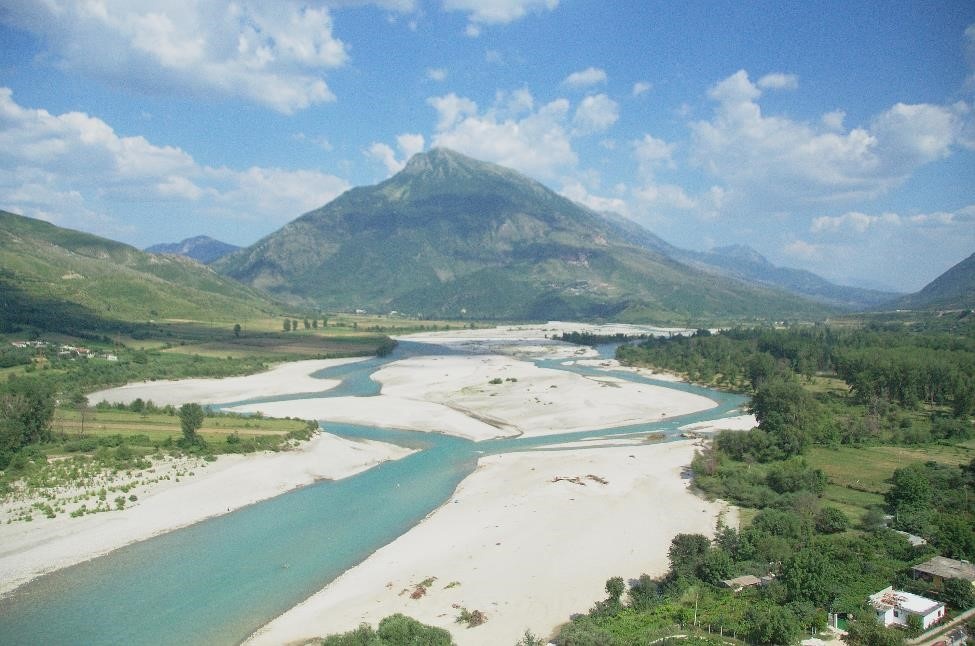

Modeling the Vjosa River in Albania
The Vjosa River in Albania is one of the last “wild” rivers in Europe – its flow is almost entirely unimpeded by large-scale infrastructure like reservoirs. In a collaboration between the Stockholm Environment Institute, the United Nations Development Program and the Institute of Geosciences, Energy, Water and Environment in Tirana, Stephanie modeled the Vjosa River to consider the impacts future changes. First the project members collected data and built a representation of the Vjosa River in the Water Evaluation and Planning (WEAP) software. After calibrating the model for the years 2002-2008, Stephanie quantified potential future scenarios for entry into the WEAP model, including different levels of climate change, growth in tourism, and hydropower reservoir construction. The model offered insight to the tradeoffs of different development options for the region as well as regional vulnerabilities to climate change. Stephanie organized and delivered the project’s substantial capacity building components for the partners in Albania, which has enabled the research to continue following the conclusion of the project. The project marks the first time the Vjosa River has been modeled.
